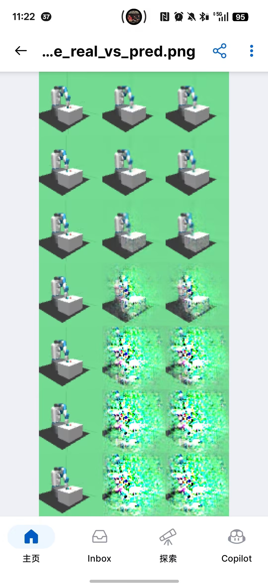
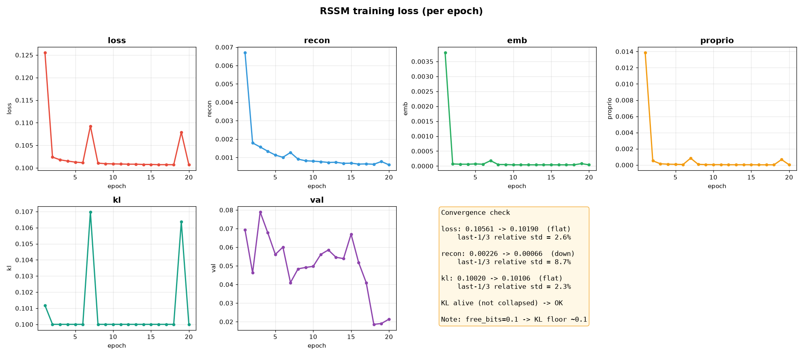
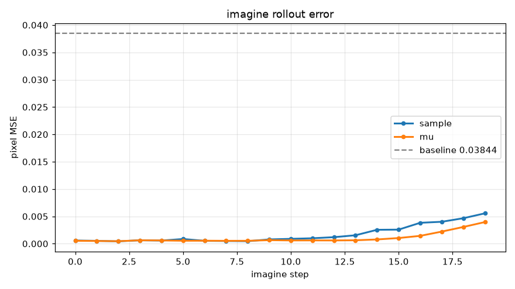
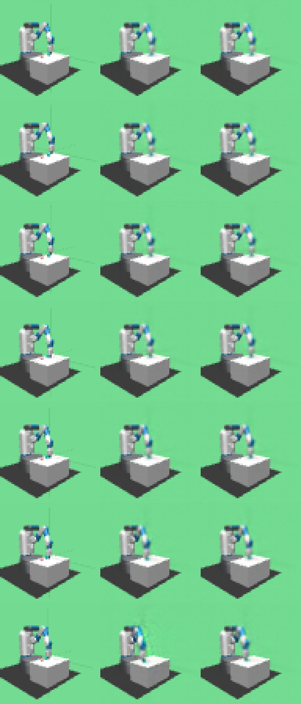

PRISM-WM · 两次训练的完整对比：条件 / 现象 / 数据 / 根因 / 后续路线
| v1（训飞） | v2（修复后） | |
|---|---|---|
| 训练数据 | 1,241 局（旧采集：含大量"卡住不动"的静止片段、方块仅 2.5cm、相邻帧差异 0.0026） | 743 局（重采：stall 过滤掉静止片段、方块改青色提高可辨识度、位姿导出） |
| free_bits | 0.1（KL 修复后） | 0.1（不变） |
| 训练指标 | 看似正常：KL 0.032、recon 0.0005 | KL 0.100、recon 0.0006 |
| imagine 20 步 MSE | 0.080（超基线 0.0385，12 步即崩） | 0.0042（远好于基线） |
| 想象画面 | 12 步后碎成彩色噪点 ❌ | 20 步全程清晰 ✅ |
| step | 像素 MSE（sample） | 现象 |
|---|---|---|
| 0–4 | 0.00049 ~ 0.00045 | ✅ 与真实帧几乎无法区分 |
| 6 | 0.00214 | ⚠️ 白色桌面上开始出现噪点 |
| 9 | 0.00896 | ❌ 桌面大面积破碎 |
| 12 | 0.05911 | ❌ 超过基线 0.0385 |
| 19 | 0.07990 | ❌ 全图碎成彩色像素块 |

此处为 v1 训飞现象截图（原始 PNG 已被后续运行覆盖）。请将当时保存的手机截图复制到 prism/preview/imagine_v1_collapse_original.jpg 即可在此显示。prism/preview/imagine_v1_collapse_original.jpg（文件名保持不变即可显示）。
v1 的数值曲线则完整保留在下方（来自当时记录的 20 步 MSE）。文件：prism/collect/collect_mujoco.py
| 行号 | 改动 | 作用 |
|---|---|---|
| 98 / 193 | set_object_color() 及调用 |
方块改青色（原灰色与桌面同色，64×64 下不可见） |
| 44 / 68 | TABLE_X/Y + 边缘刹车 |
方块接近桌沿就停手，不再被推下桌 |
| 346 | --stall-window 20 |
连续 20 帧不动即终止 —— 过滤"卡住不动"片段 |
| 344 | --drop-z 0.35 |
方块掉下桌立即终止（原来继续录垃圾帧） |
| 343 | --min-len 30 | 过短的 episode 丢弃 |
| 125 / 143 / 350 | collect_geom_meta / collect_frame_poses / --export-poses |
导出 24 个几何体的每帧世界位姿（UE5 回放用） |
python prism/collect/collect_mujoco.py --episodes 1200 --out prism/data/L0 --randomize --export-poses → 产出 743 局（旧 1241 局自动备份为 prism/data/L0_v1）
python prism/train/train_rssm.py --epochs 20 --free-bits 0.1 --out prism/ckpt_fb01
v2 没有动 imagine 的任何算法参数 —— context=8、horizon=20 始终是 8 和 20。
变化的是它读的数据和用的权重：
读 prism/data/L0 → 取验证集第一局 → 前 8 帧 observe 建立记忆 → 想象 20 步
↑ 由旧 1241 局换成重采的 743 局（模型也换成重训后的权重）
所以那"8 帧"是新数据集里的新序列，不是把 context 从别的值改成 8。
| 文件 | 作用 |
|---|---|
prism/config.yaml | 训练 + 推理参数集中管理（改这里后双击 bat） |
prism/tools/check_poses.py | 验证位姿与渲染帧同步（误差 0.000 mm） |
prism/tools/plot_loss.py | 画 loss 曲线 + 自动收敛判断 |
run_train.bat / run_imagine.bat | 一键训练 / 推理（自动出图） |
imagine_demo.py 改造 | 支持 config + 每步数据导出 CSV（供分析） |



| 指标 | v1 | v2 | 改善 |
|---|---|---|---|
| imagine 第 20 步 MSE（sample） | 0.0799 | 0.0042 | 19 倍 |
| imagine 第 20 步 MSE（mu） | ~0.08（估） | 0.0022 | — |
| 超过基线的步数 | 第 12 步起 | 0 步 | — |
| 有效样本（无静止污染） | 7,272（含大量垃圾帧） | 4,356（全有效） | — |
| 训练 KL（第 20 轮） | 0.032（free_bits 前 0.000002） | 0.100（顶在 free_bits） | — |
| 训练 recon（第 20 轮） | 0.0005 | 0.0006 | 相当 |
| 版本 | 数据 | 关键改动 | 20 步 MSE | 现象 | 状态 |
|---|---|---|---|---|---|
| v1 | 1,241 局（旧） | free_bits=0.1 | 0.0799 | 12 步后破碎 | ❌ |
| v2 | 743 局（重采） | 数据清洗（青色方块/stall 过滤/掉落终止） | 0.0042 | 20 步清晰 | ✅ |
| v3 计划 | 重采（加强随机化） | 摩擦/质量扰动加大 + 方块加大（2.5→4cm）+ 外力扰动 | 待测 | — | ⬜ |
| v4 计划 | 同 v3 | 分辨率 64→96（方块像素↑，感知信号增强） | 待测 | — | ⬜ |
| v5 计划 | 同 v4 | 加物体位置预测头（MPC 代价不再用末端近似） | 待测 | — | ⬜ |
| v6 计划 | 同 v5 | 离散 latent（DreamerV3 方案） | 待测 | — | ⬜ |
run_train.bat —— 训练 + 自动 loss 曲线（4 项分解，判断训练收敛）run_imagine.bat —— imagine 20 步 + 自动每步数据（CSV）与误差曲线（判断长程）用 eval_curve.py 测"真实 KL"（调用 loss 时不带 free_bits，不受地板掩盖）：
| 分量 | ep20 真实值 | 说明 |
|---|---|---|
| kl(真实) | 0.020 | 占总 loss 约 95% —— 绝对主导项 |
| recon | 0.0006 | 比 KL 小 30 倍 |
| emb | 0.00004 | 比 KL 小 500 倍（早期就饱和到 1e-5，不再提供梯度） |
| proprio | 0.00003 | 同上，早饱和 |
出于"KL 项梯度被地板吃掉、prior 没被训练"的假设，做了 free_bits 0.1 → 0.01 的重训对照：
| free_bits | 真实 KL | 训练总 loss | val_loss | 第20步想象 MSE | 结论 |
|---|---|---|---|---|---|
| 0.1 | 0.020 | 0.1007 | 0.019~0.079（波动） | 0.0049 ✅ | ✅ 更好 |
| 0.01 | 0.006 | 0.0106 | 0.005~0.008（更稳） | 0.0509 ❌ | ❌ 更差 |
| 指标 | 表现 | 可信度 |
|---|---|---|
| 训练收敛（recon↓、KL 稳） | ✅ 好 | 可信 |
| 像素 MSE（imagine 20 步 0.0049） | ✅ 好 | ⚠️ 对"物体动力学"是盲的 —— 方块仅 1px，位置误差被背景淹没（见下） |
| 物体动力学（方块会往哪走） | ❌ 没学到 | 真实缺陷（观察：真实物体动了 6cm，想象画面方块不动） |
eval_curve.py 监控真实 KL（不被地板掩盖），警戒线：KL < 0.001 = 塌缩；KL < 0.01 = 信息过少（想象会退化）